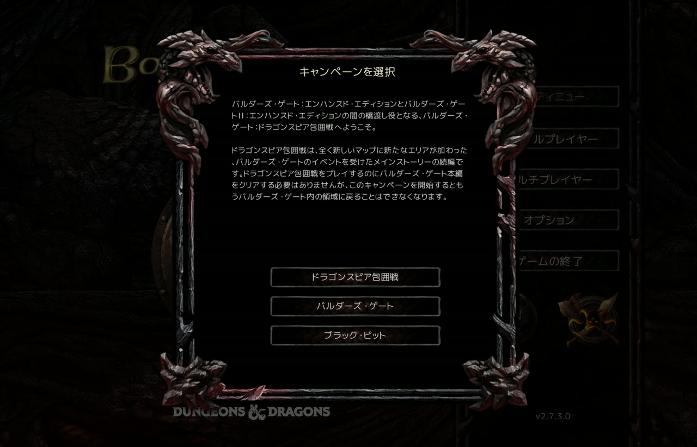

どんなゲーム？
シージ・オブ・ドラゴンスピアは、2016年に Beamdog が発表した、バルダーズ・ゲートとバルダーズ・ゲートII の間をつなぐ拡張シナリオです。
サレヴォクを倒し「バルダーズ・ゲートの英雄」となった主人公は、北から攻め寄せる「輝ける淑女」ケイラー・アージェント率いる十字軍との戦いに身を投じます。新しい仲間グリント、コーウィン、ムキーン、ヴォグヒルンとともに、ブリッジフォートやボアスカイア橋を越えて、ドラゴンスピア城へ向かいます。
Baldur's Gate: Siege of Dragonspear
「Baldur's Gate: Enhanced Edition」の拡張「Siege of Dragonspear（シージ・オブ・ドラゴンスピア）」には公式の日本語版がありません。このパッチは、会話・主人公の選択肢・日誌・アイテムや呪文の説明・ボイスの字幕など、SoD の文章約3.7万件をすべて日本語にする非公式のファンメイドパッチです。 固有名詞や仲間の口調は、BGEE・BG2EE の日本語版に合わせています。zip の中の「かんたんインストール」をダブルクリックするだけで入れられます。
シージ・オブ・ドラゴンスピアは、2016年に Beamdog が発表した、バルダーズ・ゲートとバルダーズ・ゲートII の間をつなぐ拡張シナリオです。
サレヴォクを倒し「バルダーズ・ゲートの英雄」となった主人公は、北から攻め寄せる「輝ける淑女」ケイラー・アージェント率いる十字軍との戦いに身を投じます。新しい仲間グリント、コーウィン、ムキーン、ヴォグヒルンとともに、ブリッジフォートやボアスカイア橋を越えて、ドラゴンスピア城へ向かいます。

ダウンロードした SiegeOfDragonspear_JP_v1.0.zip を展開します。先にゲームの「オプション」→「言語」で日本語（Japanese）を選んでおいてください。ゲームのフォルダは、Steam のライブラリで「Baldur's Gate: Enhanced Edition」を右クリックし、「管理」→「ローカルファイルを閲覧」で開けます。
Baldur.exe があるフォルダ）にコピーします。BGEE 日本語化修正パッチも使う場合は、その WeiDU 版（setup-bgee_jpfix.exe と bgee_jpfix）も同じ場所に置いておくと一緒に入ります。かんたんインストール.bat をダブルクリックします。DLC Merger による SoD の統合 → BGEE 修正 → SoD 日本語化 が順に自動で入ります（統合に数分かかります）。「差し替え版（DLC Merger 導入済み環境用）」の中の lang と override を、ゲームのフォルダに上書きコピーします（BGEE 修正パッチの内容も含まれています）。DLC Merger を入れていない環境では反映されません。
setup-DlcMerger.exe（「Merge "Siege of Dragonspear" DLC」）→ setup-sod_ja.exe の順に実行し、言語は Japanese を選びます。
WeiDU の使い方と、BGEE・SoD・BG2EE・EET をまとめて日本語で遊ぶ手順は WeiDU の使い方とバルダーズ・ゲート日本語統合環境の作り方で詳しく説明しています。
setup-sod_ja.exe をもう一度実行して U を選ぶと元の英語に戻ります。DLC Merger も外す場合は、そのあとで setup-DlcMerger.exe を実行して U を選びます。誤訳や不自然な訳に気づいたら、GitHub の Issues で教えてください。